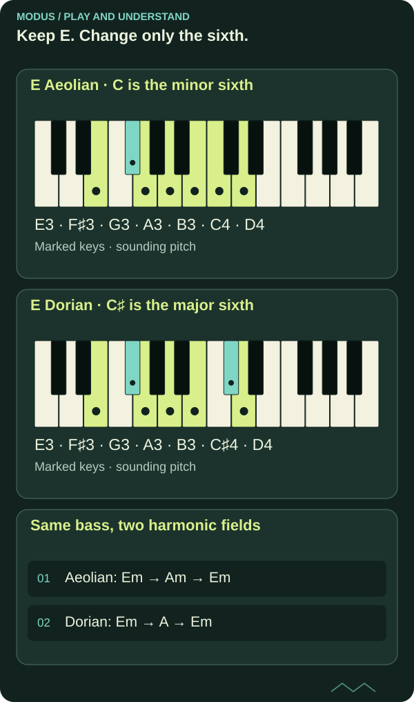

Dorian and Aeolian: same tonic, new colour
Keep E as home and compare C with C♯. Changing just one scale degree makes the difference between Aeolian and Dorian easier to explore with both your ear and your instrument.

Keep the tonic fixed
E Aeolian, or E natural minor, has E–F♯–G–A–B–C–D. E Dorian has E–F♯–G–A–B–C♯–D. Six of the seven notes are shared. The difference is the minor sixth, C, versus the major sixth, C♯, measured from E.
Both have a minor third, G, and a minor seventh, D. Dorian therefore retains a minor character even though its sixth is major. This comparison concerns the interval structure, not a fixed rule for how the music must feel.

Read the diagram as text
- E Aeolian · C is the minor sixth: E3 → F♯3 → G3 → A3 → B3 → C4 → D4
- E Dorian · C♯ is the major sixth: E3 → F♯3 → G3 → A3 → B3 → C♯4 → D4
- Same bass, two harmonic fields: Aeolian: Em → Am → Em; Dorian: Em → A → Em
Change one note in a short phrase
Play E–G–B–C–B–G–E slowly over an E drone. Then replace only C with C♯. Keep the rhythm, register and duration as similar as possible so you are examining the pitch change rather than several changes at once.
Then try sustaining C or C♯ a little longer before moving to B. Notice that C is a half step above B, while C♯ is a whole step above B. Describe the difference you hear without searching for one mandatory emotion word.
Let the chords support the comparison
Em–Am can support E Aeolian when Em feels like home. Am contains A–C–E. Replace Am with A major and C becomes C♯: A–C♯–E. Em–A can therefore support E Dorian.
With E as the reference, this is i–iv versus i–IV. The lowercase or uppercase numeral describes the chord quality. A progression alone does not guarantee how the centre is heard; use the bass, phrasing and return to Em to establish E clearly.
Distinguish parallel and relative comparisons
E Aeolian and E Dorian are compared in parallel: the same tonic, with one changed scale degree. G major and E Aeolian are relative: the same notes, with different centres. The two comparisons answer different questions.
Finally move the experiment to A. A Aeolian has F, while A Dorian has F♯. Keep the other notes A, B, C, D, E and G. You are applying the same interval idea from a new tonic.
FROM READING TO PLAYING
Try it yourself.
Play the same short phrase in E Aeolian and E Dorian. Explain the difference as ♭6 versus 6. Then compare Em–Am with Em–A, and repeat from A as the tonic.
Explore scales and modes with a pianoCHECK YOUR UNDERSTANDING
What do you remember?
Three questions about what you have read. Get all three right to complete the quiz. Try as many times as you like.
Completion is saved in this browser and shared between Norwegian and English.
You answered all three questions correctly. Take the idea to your instrument.
Back to the article library ↗︎